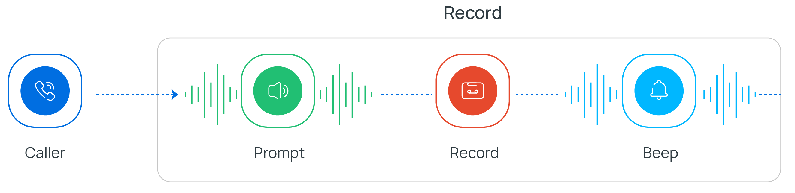
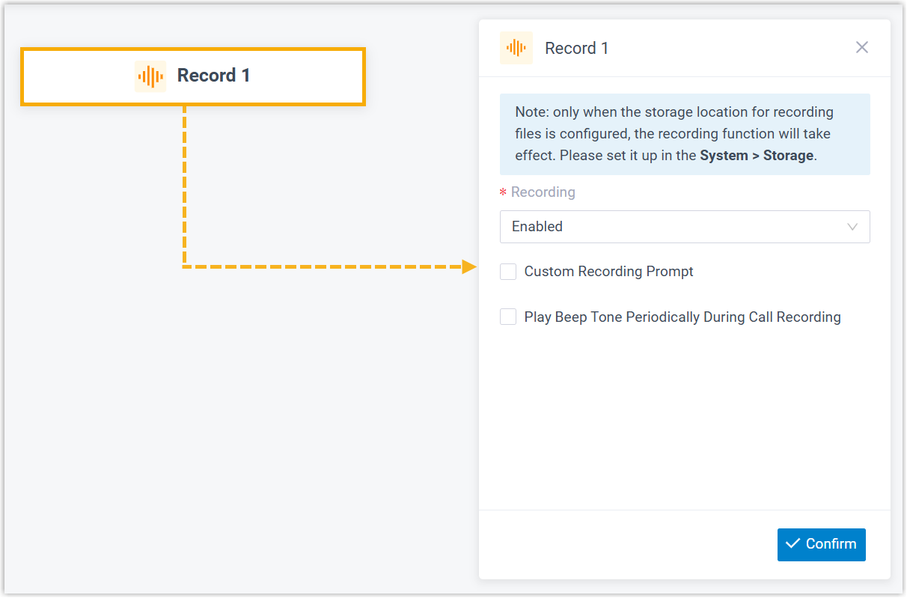
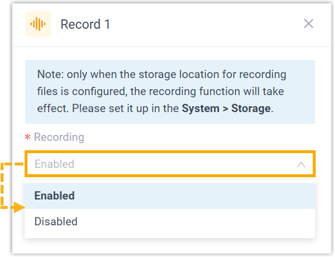
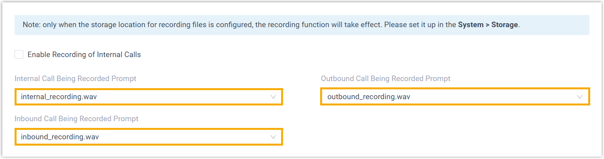
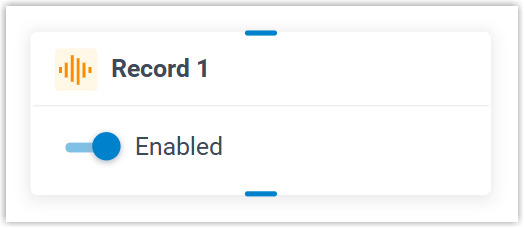

Record
This topic provides an overview of the Record component, and describes its requirement, configuration, as well as supported component connections.
Component requirement
Record component requires a storage location to save recording files.
You can store recording files on local storage, an external device, or a network drive. For long-term retention and backup, you can also archive the files to external servers such as Amazon S3, Google Cloud Storage, FTP server, or SFTP server.
- (Required) Set Storage Location
for Recording Files

- (Optional) Archive Recording Files to External Server
Component introduction
Record component allows you to start or stop recording a call when it reaches the component in the call flow, and optionally configure prompts to inform call participants at the start and during the recording.

- Supported prompt types
-
Prompt Type Description Custom Prompt Choose from existing custom prompts, or create a new one by recording with an extension or uploading an audio file. Text to Speech (TTS) Enter the desired text, which will be converted to speech in the selected language and voice style.
Note: Before you begin, make sure the Text-to-Speech feature is enabled in .
Component configuration
- After adding Record component to a call flow, click
Record component to proceed with the
configuration.

- In the Recording drop-down list, select an option to
enable or disable call recording.

- If call recording is enabled, you can configure prompts to inform call
participants of the recording.Note:
- For Conference Call and Multi-party Call, call participants will not hear the prompt.
- If no custom prompt is configured, the system will use the
global prompt for recording (Path: ), if available.

- Play prompt at the start of call recording
- You can play audio prompt(s) or a text-to-speech message to inform call participants when call recording starts.
- Play prompt during call recording
- You can play beep tones during call recording to inform call participants that the call is being recorded.
- Click Confirm.
The recording status will appear on the component.

Component connections
Record component can be connected to one component, which can be any of the supported components.